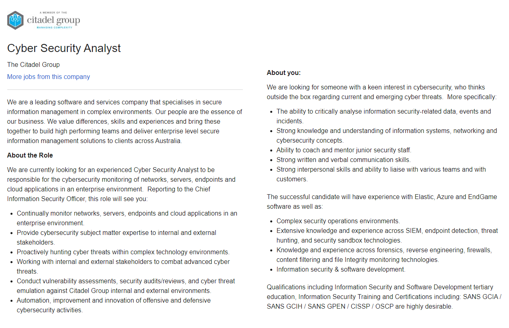
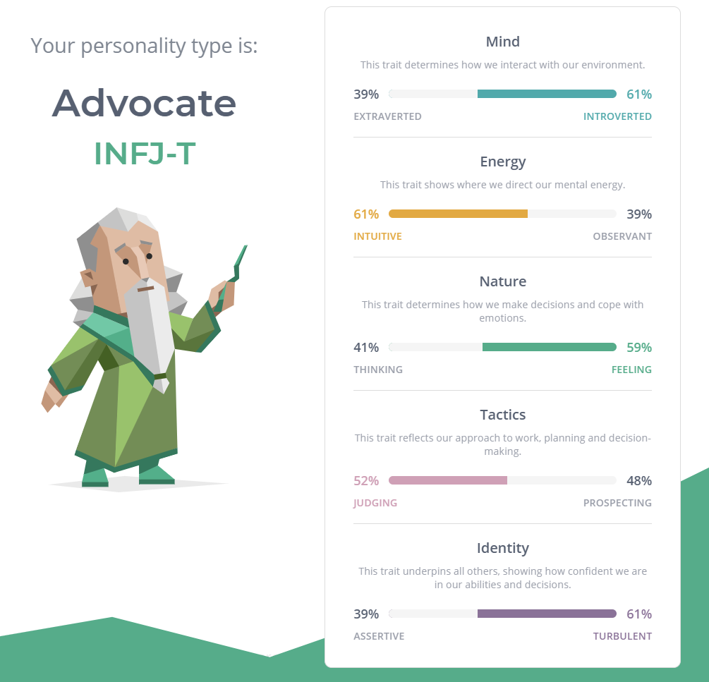
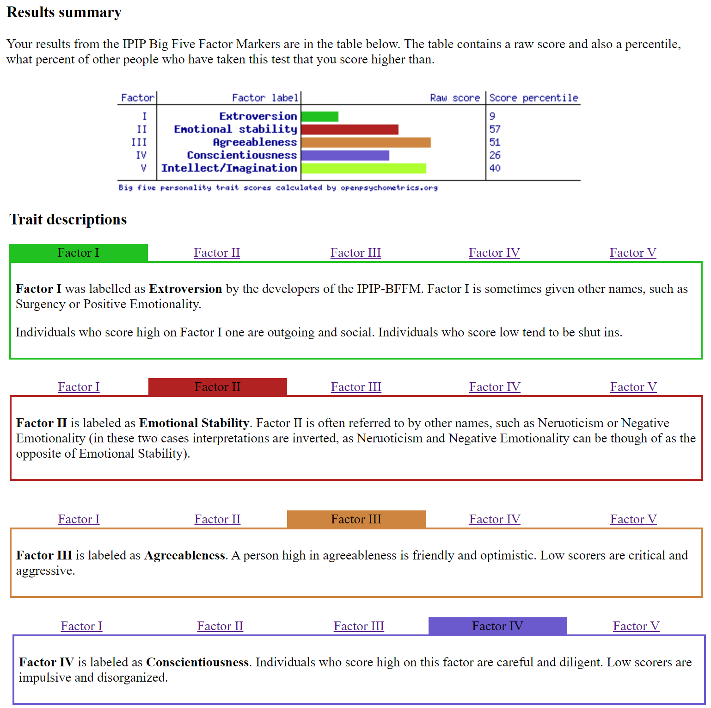
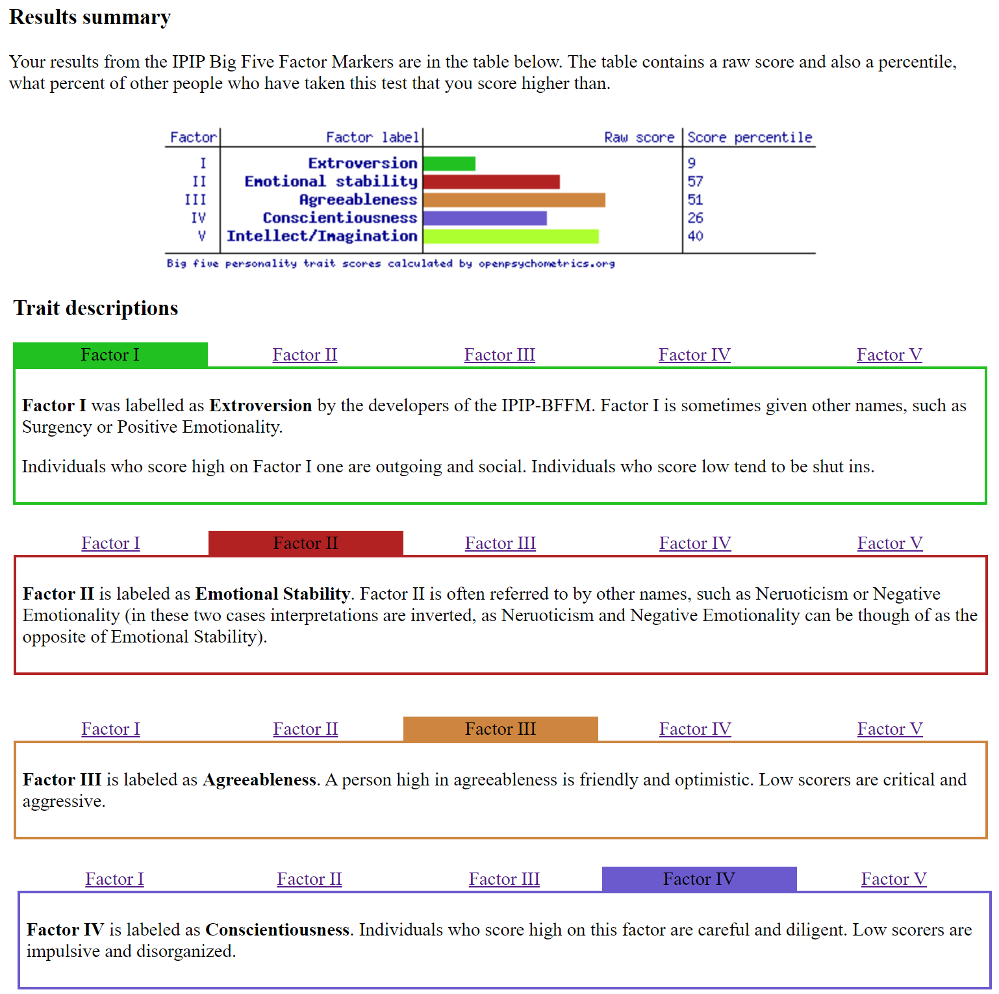

Personal Info
Hi, my name is Adrian. I was born in 1996 in the Philippines. My family moved to Melbourne Australia in 2004 and we have lived here ever since. Fortunately I didn’t lose the ability to speak my native language (Tagalog/Filipino) which is really cool.
Throughout my life I’ve had many different interests which I pursued. I’m currently into Tech, Computers and a little bit of audio. I love listening to music and audiobooks, I play a little piano, I love my card games, video games, otaku stuff, reading and last but not least, photography.
I’ve studied varying subjects and courses over the years, each having nearly nothing to do with each other. I’ve completed a Diploma of Remedial Massage which I was planning to upscale into Myotherapy and/or Osteotherapy but ultimately decided against it. The most recent thing I’ve studied and completed is my Non Destructive Testing Ultrasonics Course in General Engineering.
Interest in IT
My interest in IT began when I was very young. I remember playing with a computer whilst I was waiting for my parents to finish work in their office. I became very interested in technology although at the time I was just messing around with Microsoft Paint and occasionally playing a cheeky game of Command and Conquer.
I still loved playing games even when I was in highschool. Back then I started taking interest in the hardware side of computers and learned how to build them; I still love tech to this day and collect a bunch of gadgets from headphones to cameras. Recently after talking to some friends in the IT industry, I have gained a keen interest in the more technical side of IT, particularly in Cyber Security.
I’ve been thinking of studying IT for a while but have been unable to leave my professional commitments. When I learnt that RMIT’s Bachelor of IT course had an online option I was very excited; not only do I now have an opportunity to study what I love at a suitable time, but I can also study under a respected Australian University.
Through my time studying at RMIT, I’m expecting to learn a variety of different aspects of Information Technology. I’m excited to be able to learn about programming and software, building skills in analysing problems within computers and networks, and to learn how the industry works. Additionally I’m pretty excited that there is also group work coming up which I expect would help me build my skills in communication and teamwork.
Ideal Job
Personally, Cyber Security has been one of the most fascinating sectors in IT. A lot of daily life is evolving in a way that requires or is enhanced by the use of technology, for example, a lot of transactions are now done over the internet including banking. As we rely more and more on IT, it is apparent that we also need to become aware of the possible dangers we may face. Being a Cyber Security Analyst is my ideal job because I love the idea of being able to proactively help clients and services, and ultimately, people and consumers be safe while using computers.

The position offered by The Citadel Group requires many years of experience in the field. It also requires a keen interest and a good amount of technical know-how about the equipment and software used. The job will also require someone with the ability to carefully analyse data, someone who has strong communication skills to be able to work with differing teams and also clients.
Currently I do not meet all of the requirements to be considered for this role. However I do believe that I do have a keen interest and willingness to learn and develop myself in the future. As of this moment I am working towards obtaining these skills through studying with RMIT. I am excited to be able to start working in teams to develop my interpersonal skills during the next portion of the course. Through the course I also hope to get proficient in areas such as programming. After completing the Bachelor's Degree in Information Technology I plan to continue to do postgraduate study in Cyber Security to further develop my skills in the area. I also hope to get some sort of work experience in the IT industry in this time to prepare and get to know how it works. There are also possible options in doing various certifications relating to Cyber Security.
Personal Profile

I find that the results from all three tests are somewhat accurate. I find that the 16personalities test is the closest representation of how I truly behave. As an “advocate” I try my best to treat others with respect and value working towards a purpose that is both satisfying and for a worthy cause. I would say the tests provide a clear and accurate representation of my personality in a team environment. I don’t like conflict and I dislike taking sides in any argument. I try my best to resolve issues before they become a serious problem. I do take criticism quite seriously but I can honestly say that I do at times have trouble accepting it, depending of course on what the critique is about. I will try and take these attributes into account and try to be more open to criticism, feedback and ideas from other team members. I will also try to do my best to resolve any team related issues that may arise before they become a hindrance. As I don’t believe my personality is suited to leadership, I believe it would be better if there is another person in the team that would assume that role.
 

Intro

Overiew
My idea is quite simple. I plan on designing a smartphone application along with a corresponding automated medication dispenser. Essentially, the idea is to create a “Smart Pill Box/Dispenser.” The application would pair with the dispenser and will host a few features that will help the user with the Medication Dispenser’s functions. These features will include user inputted timers, reminders or notifications. It will also have features to help monitor your inventory of medication, alerts when they are running low etc. The dispenser itself will be quite simple and portable. It will be compartmentalised like a traditional medication pill box (with days) and a small screen for information.
Motivation
The project is designed to help anyone that needs to take medication, it can also include those people that are taking vitamins. It will be especially useful for those who are elderly, and or are having issues with memory loss. According to: nps.org“It is estimated that more than 9 million people take a prescribed medicine every day, with 8 million taking two or more prescribed medicines in a week.” Many of these people would find the Smart Dispenser useful for tracking and managing their medication intake.
Description
The Smart Pill Box Application will offer the user with an easy to navigate UI. They can use the app to set reminders when they need to take their medication and what type of medication they need to take. The application will be able to connect to the physical device and can lock each compartment unless it is opened, this is to prevent mishandling or accidental consumption by children.
The application will also be able to store prescriptions where it is possible. Information about medication will be readily available including recommended dosage and other useful information.
The app can also control the inventory of the users' medication. This can be achieved by registering medication when they are purchased. As an addition you can also use the application to order medication from a local pharmacist, as long as it is not prescribed, or if one has an electronic prescription. The app will keep track of how much medicine remains, and the user may, if they wish, set an alarm or alert if the stock is running low. The user could also set the application to alert the user's caretaker or guardian whenever they are running out of medication or if medication has not been taken.
The physical device will be relatively simple, like a traditional pill box. It will have compartments for each day of the week with LED’s and a small screen. The screen is modular and can be changed via application commands depending on user preference.
The screen may display green when the medication inside is ready to be taken, or it could have a static date and time, reminding the user what day they should take it. As the pill box works best when connected to the application it will have a small symbol on the screen to let the user know if it is connected to the smartphone application.
The Smart Pill Box can be connected to the users Smart Home ecosystem. This will allow operation of the device by speaking to a Google Home or Alexa and other similar devices. They may use Alexa or Google to access useful information such as remaining medication in the inventory or to ask when they need to take their next set of medication. The user may even use their device to set an alarm.
Tools and Technologies
The physical device will be constructed of a lightweight material. It could be possible to 3d print the design. If so it would be beneficial to have a 3d printing machine, modelling software and the technical knowledge and skill to create 3d models. The technical side of the hardware, ie. the onboard software will be programmed using a raspberry pi. Programming the device will allow it to interact with the smart phone application.
Some physical tools such as soldering irons will be needed to install LED’s and other small items like doors for the individual compartments to the main physical body of the Smart Pill Box.
The smart phone application will be created using software such as the MIT App Inventor. The application will be set up in a way that it can communicate with the Smart Pill Box and the option to connect to a Google Home or Alexa ecosystem wirelessly.
Skills Required
The project will require a few key skills to be completed. The ability to program the raspberry pi and the Smart Phone Application via MIT App Inventor will be essential. Experience with 3d modelling and access to software will also be needed to create the main physical device. Skills in constructing, crafting and electronics will come in handy when assembling the product; we need to be able to use tools such as soldering irons. Although these are things that require a fair amount of expertise, I believe that it could be achieved and will be completely feasible.
Outcome
If everything goes smoothly and if the Smart Pill Box is constructed, I believe it would be a great option for those people who regularly use medications, especially the elderly. I hope that the alerts, reminders and other features of the Smart Phone Application and it’s companion, the Smart Pill Box, can help assist those who struggle with remembering when and what medication they need to take. I also believe that it can be a great tool for those caretakers who look after these people to be able to be on top of their patients' medication habits and inventory.